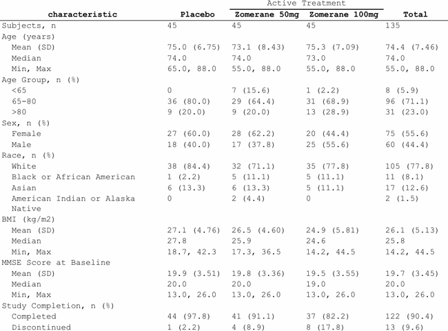
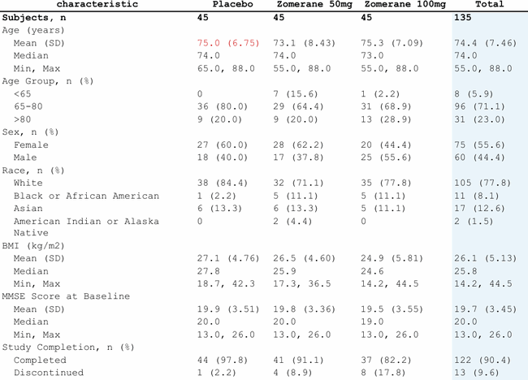
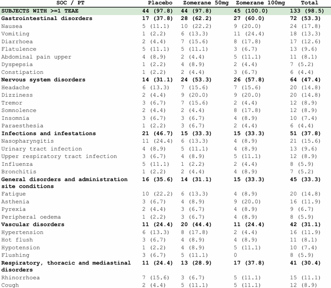
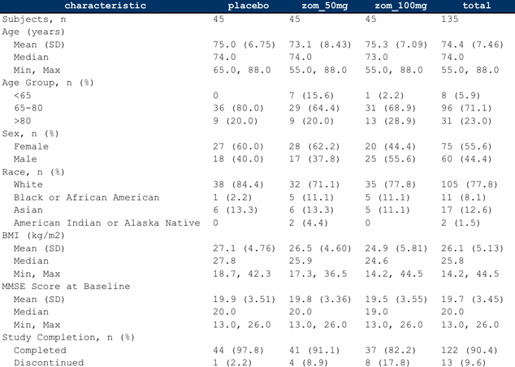
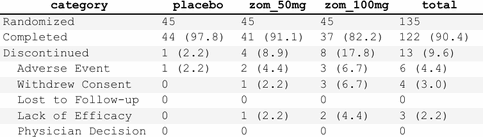

Horizontal rules
Presets
| Preset | Description |
|---|---|
"header" |
Single rule below the column header only (pharma standard, ICH E3) |
"open" |
Rule above header + rule below header; no bottom border |
"hsides" |
Rule at the top (above header) and bottom (below body) only |
"above" |
Single rule above the column header only |
"below" |
Single rule below the last body row only |
"booktabs" |
Thick top (1pt) + thin mid (0.5pt) + thick bottom (1pt) (publication style) |
"box" |
Full outer border on all four sides |
"void" |
No horizontal rules; clears all previously set rules |
Custom styling
spec <- tbl_demog |>
fr_table() |>
fr_hlines("open", width = "thick", color = "#003366", linestyle = "dashed")Width options: "hairline" (0.25pt), "thin"
(0.5pt), "medium" (1pt), "thick" (1.5pt), or a
numeric value in points.
SAS:
STYLE(header)=[borderbottomstyle=solid borderbottomwidth=1pt];
Vertical rules and grids
Vertical presets: "box" (outer edges only),
"all" (every column + outer), "inner" (between
columns only), "void" (none).
fr_grid() is shorthand for combined horizontal +
vertical rules:
Spanning headers
fr_spans() groups columns under a shared label:
spec <- tbl_demog |>
fr_table() |>
fr_cols(
characteristic = fr_col("", width = 2.5),
placebo = fr_col("Placebo"),
zom_50mg = fr_col("Zomerane 50mg"),
zom_100mg = fr_col("Zomerane 100mg"),
total = fr_col("Total"),
group = fr_col(visible = FALSE)
) |>
fr_spans("Active Treatment" = c("zom_50mg", "zom_100mg"))
Spanning header grouping treatment columns
Unlike most verbs, fr_spans() appends
on repeated calls.
Multi-level spans
Build from inner to outer (lowest level first):
spec |>
fr_spans("10 mg" = c("low_n", "low_pct"), .level = 1) |>
fr_spans("25 mg" = c("high_n", "high_pct"), .level = 1) |>
fr_spans("Zomerane" = c("low_n", "low_pct",
"high_n", "high_pct"), .level = 2)Level 1 sits above column labels; level 2 sits above level 1.
Cell styling
Apply visual overrides to rows, columns, or individual cells:
spec <- tbl_demog |>
fr_table() |>
fr_cols(
characteristic = fr_col("", width = 2.5),
placebo = fr_col("Placebo"),
zom_50mg = fr_col("Zomerane 50mg"),
zom_100mg = fr_col("Zomerane 100mg"),
total = fr_col("Total"),
group = fr_col(visible = FALSE)
) |>
fr_hlines("header") |>
fr_styles(
fr_row_style(rows = 1, bold = TRUE),
fr_col_style(cols = "total", bg = "#EBF5FB"),
fr_style(rows = 3, cols = "placebo", fg = "#CC0000")
)
Row bold + column background + cell foreground color
Style constructors
| Constructor | Scope | Key args |
|---|---|---|
fr_row_style() |
Entire row(s) |
rows, bold, bg,
fg, align, valign,
height, … |
fr_col_style() |
Entire column(s) |
cols, bold, bg,
fg, align, valign, … |
fr_style() |
Row-column intersection |
region, rows, cols,
bold, bg, fg, align,
valign, colspan, … |
fr_style_if() |
Data-driven (conditional) |
condition, cols, apply_to,
bold, bg, fg, align,
… |
fr_style() targets a specific region:
"body" (default), "header", or
"stub". valign controls vertical placement
within the cell: "top", "middle", or
"bottom".
Like fr_spans(), fr_styles()
appends on repeated calls.
Content-based row selection
fr_rows_matches() selects rows by data values instead of
row numbers:
spec <- tbl_ae_soc |>
fr_table() |>
fr_cols(
soc = fr_col(visible = FALSE),
pt = fr_col("SOC / PT", width = 3.0),
row_type = fr_col(visible = FALSE),
placebo = fr_col("Placebo"),
zom_50mg = fr_col("Zomerane 50mg"),
zom_100mg = fr_col("Zomerane 100mg"),
total = fr_col("Total")
) |>
fr_styles(
fr_row_style(
rows = fr_rows_matches("row_type", value = "soc"), bold = TRUE
),
fr_row_style(
rows = fr_rows_matches("row_type", value = "total"),
bold = TRUE, bg = "#D5E8D4"
)
)
Content-based styling: SOC rows bold, total row highlighted
Regex patterns work too:
spec <- tbl_tte |>
fr_table() |>
fr_styles(
fr_row_style(
rows = fr_rows_matches("statistic", pattern = "^[A-Z]"),
bold = TRUE
)
)Header region styling
spec <- tbl_demog |>
fr_table() |>
fr_styles(
fr_style(region = "header", bold = TRUE, bg = "#003366",
fg = "#FFFFFF", align = "center")
)
Dark navy header with white text
Zebra striping
spec <- tbl_disp |>
fr_table() |>
fr_styles(
fr_row_style(rows = seq(1, nrow(tbl_disp), 2), bg = "#F5F5F5")
)
Alternating row backgrounds (zebra striping)
Conditional styling with fr_style_if()
fr_style_if() applies styles based on cell values rather
than row numbers. The condition is a one-sided formula using
.x as the pronoun, or a plain function. It is evaluated at
render time against the actual data, so it works correctly even when row
positions are unknown in advance.
Bold “Total” rows — match exact text in a column:
spec <- tbl_demog |>
fr_table() |>
fr_hlines("header") |>
fr_styles(
fr_style_if(
cols = "characteristic",
condition = ~ .x == "Total",
apply_to = "row",
bold = TRUE, bg = "#E8E8E8"
)
)Zebra striping without hard-coded indices — when
cols = NULL, .x receives row indices:
spec <- tbl_disp |>
fr_table() |>
fr_hlines("header") |>
fr_styles(
fr_style_if(
condition = ~ (.x %% 2) == 0,
apply_to = "row",
bg = "#F5F5F5"
)
)Highlight significant p-values — numeric comparison on a character column:
pval_data <- data.frame(
characteristic = c("Age", "Sex", "Weight"),
treatment = c("50 (23.5)", "30 (14.1)", "45 (21.1)"),
placebo = c("55 (25.8)", "28 (13.1)", "52 (24.4)"),
pvalue = c("0.042", "0.310", "0.003"),
stringsAsFactors = FALSE
)
spec <- pval_data |>
fr_table() |>
fr_hlines("header") |>
fr_styles(
fr_style_if(
cols = "pvalue",
condition = ~ as.numeric(.x) < 0.05,
apply_to = "row",
bold = TRUE, fg = "#CC0000"
)
)Colour only the matching cells — use
apply_to = "cell" (the default) instead of
"row":
spec <- tbl_ae_soc |>
fr_table() |>
fr_hlines("header") |>
fr_styles(
fr_style_if(
cols = "soc",
condition = ~ grepl("SKIN|GASTROINTESTINAL", .x, ignore.case = TRUE),
apply_to = "row",
bg = "#FFF3CD"
)
)The condition argument also accepts a plain function
instead of a formula:
is_total <- function(x) x == "Total"
tbl_demog |>
fr_table() |>
fr_styles(
fr_style_if(
cols = "characteristic",
condition = is_total,
apply_to = "row",
bold = TRUE, bg = "#E8E8E8"
)
)SAS:
COMPUTE characteristic; IF characteristic = "Total" THEN CALL DEFINE(_ROW_, "STYLE", "STYLE=[FONT_WEIGHT=BOLD BACKGROUND=GRAY]"); ENDCOMP;
fr_style_if() objects are passed to
fr_styles() alongside fr_row_style(),
fr_col_style(), and fr_style(). All four
constructor types can be mixed in a single fr_styles()
call.
Style precedence
When multiple styles target the same cell, later styles win. Order from broadest to most specific:
spec <- tbl_demog |>
fr_table() |>
fr_cols(group = fr_col(visible = FALSE)) |>
fr_styles(
fr_col_style(cols = "total", bg = "#F0F4F8"), # broadest
fr_row_style(rows = 1, bold = TRUE), # narrower
fr_style(rows = 1, cols = "total",
bg = "#003366", fg = "#FFFFFF") # most specific
)Style debugging
fr_style_explain() shows the resolution chain for a
specific cell:
spec <- tbl_demog |>
fr_table() |>
fr_styles(
fr_row_style(rows = 1, bold = TRUE),
fr_col_style(cols = "total", bg = "#EBF5FB")
)
fr_style_explain(spec, row = 1, col = "total")
#>
#> ── Style explain: row 1, col "total"
#> Content: "135"
#> 2 matching styles:
#> [1] row: bold=TRUE
#> [2] col: bg="#EBF5FB"
#>
#> Final: bold=TRUE, italic=FALSE, fg=#000000, bg=#EBF5FB, align=left, valign=top,
#> indent=0